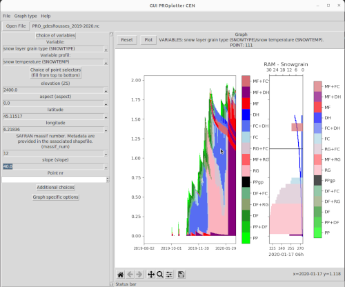
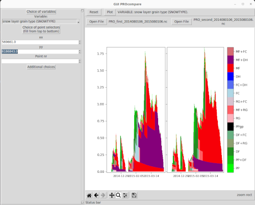

The proplotter and procompare plotting tools¶
Proplotter tool to visualize simulation outputs¶
Graphical use¶
A tool for quickly plotting SURFEX-Crocus PRO.nc output can be run with plots/stratiprofile/proplotter.py
(a proplotter command have been made available if you followed install instructions).
Just run the script with python 3 for GUI access. For usual graphs, the plotting area is divided in two parts:
on the left, a seasonal graph: time is the x-axis
on the right, a vertical profile of a variable at a given date
Moving the mouse on the left plot should change the right plot
The general behaviour to make the Graphical User Interface work is:
click the
Open Filebutton to select a PRO.nc fileselect the two variables of interest: one for the left seasonal graph, the other for the profile graph)
select the point of interest
click the
Plotbutton
There are several options for graph type:
usual graph (default) to plot a PRO file on one point of your simulation
multiple plot: let free a part a point selection in order to have several points to plot
member plot: specific to Meteo France system: in order to compare members of a simulation
height graph: follow a variable in a specific place like 10 cm under snow surface
compare graph: allow to compare two different PRO files of a simulation

Screenshot of proplotter tool.¶
Command line use¶
Script plots/stratiprofile/proplotter.py help:
usage: proplotter [-h] [--debug] [-o OUTPUT] [-b BEGIN] [-e END]
[-t {standard,multiple profil,multiple saison,height,member profil,member saison,compare}]
[-v VARIABLE] [-p VARIABLE_PROFIL] [--point POINT]
[-s SELECT] [--profil] [-d DATE] [--version]
[filename ...]
Proplotter is a tool to plot with (or without) the Graphical User Interface
which aims at providing representations and exploration tools for modelled
snowpack structures. It is primarily designed to deal with SURFEX/ISBA-Crocus
simulation output.
positional arguments:
filename Input file path
options:
-h, --help show this help message and exit
--debug Increase logging for debugging purpose.
-o OUTPUT, --output OUTPUT
Output filename (for use without GUI). Only available
for standard graph for the moment.
-b BEGIN, --begin BEGIN
Begin date
-e END, --end END End date
-t {standard,multiple profil,multiple saison,height,member profil,member saison,compare}, --type {standard,multiple profil,multiple saison,height,member profil,member saison,compare}
Type of graph (standard, multiple profil, multiple
saison, height, member profil, member saison, compare)
-v VARIABLE, --variable VARIABLE
Variable to plot
-p VARIABLE_PROFIL, --variable-profil VARIABLE_PROFIL
Variable for profil plot (if relevant)
--point POINT Point number to select
-s SELECT, --select SELECT
Selection of point with constraints on data: use as
many '-s variable=value' as necessary to select the
point of interest. Note that if -p is given, these
options are ignored.
--profil Plot profil at given date (-d is compulsory) instead
of a time evolution
-d DATE, --date DATE Date for vertical profile
--version show program's version number and exit
Procompare to compare two simulation outputs¶
The procompare tool is quite similar to proplotter but designed to compare two profiles from two different simulations files, for instance to visualize impacts of changes in the snow model.
Command line usage is similar to proplotter, use procompare --help for more details.
Note that the files that are compared should have the same geometry (same points represented for the different graphs).

Screenshot of procompare tool with two simulations with a different physical parameterization.¶